Photo credits
This is a concept preview. Until the restaurant's own photo shoot, food and lounge images are stand-ins from Wikimedia Commons, used under the licenses below. Images were resized and re-encoded to WebP; no other changes were made.
 Mansaf 1.jpgAbdulla aljammal · CC BY-SA 4.0Source on Wikimedia Commons
Mansaf 1.jpgAbdulla aljammal · CC BY-SA 4.0Source on Wikimedia Commons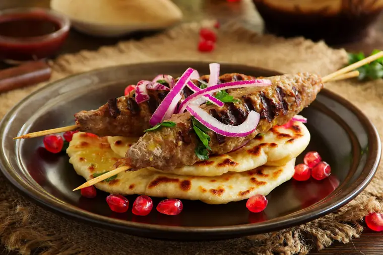
Lula kebab 2.jpgLesya Dolyk · CC BY-SA 2.0Source on Wikimedia Commons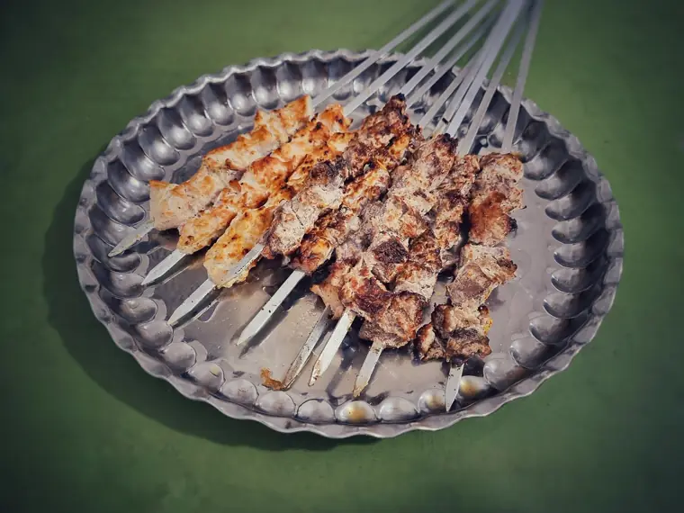
Kebab Gerashi.jpgAmin Noubahar · CC BY-SA 4.0Source on Wikimedia Commons Iraqi Mixed Grill Platter with Traditional Accompaniments.jpgAbdulsalam Al Dabbagh · CC BY-SA 4.0Source on Wikimedia Commons
Iraqi Mixed Grill Platter with Traditional Accompaniments.jpgAbdulsalam Al Dabbagh · CC BY-SA 4.0Source on Wikimedia Commons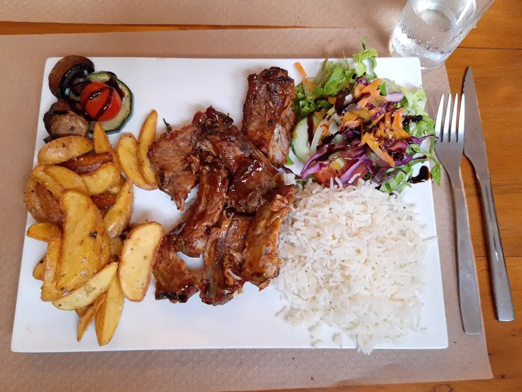
Lamb chops, São Vicente, Madeira.jpgGerda Arendt · CC BY-SA 4.0Source on Wikimedia Commons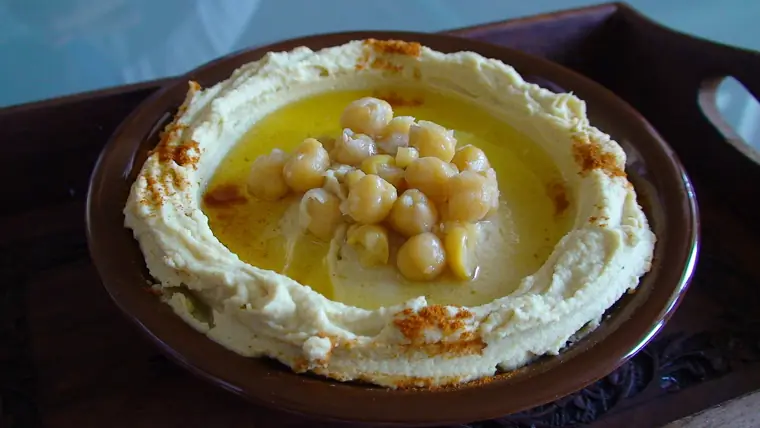
Lebanese style hummus.jpgBeyrouthhh at English Wikipedia · CC BY 3.0Source on Wikimedia Commons Falafel 1.JPGMiansari66 · CC0Source on Wikimedia Commons
Falafel 1.JPGMiansari66 · CC0Source on Wikimedia Commons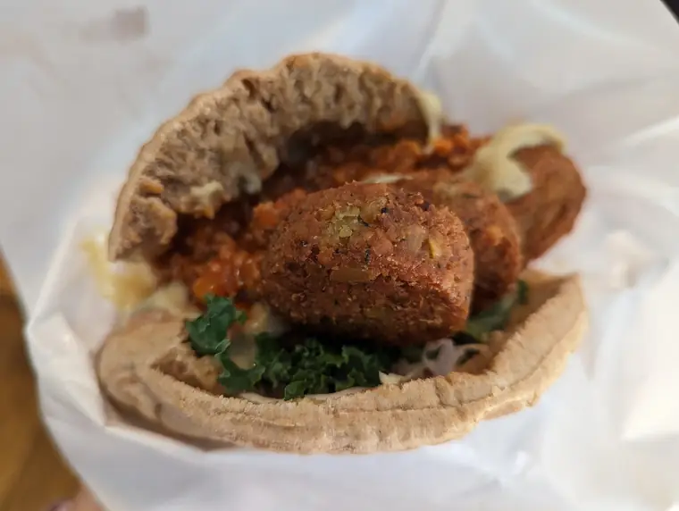
Dishes at falafel shop in Roppongi.jpgSyced · CC0Source on Wikimedia Commons Wiki loves folklore 2025 in Hamburg 17 04 28 727000.jpegDarafsh · CC BY-SA 4.0Source on Wikimedia Commons
Wiki loves folklore 2025 in Hamburg 17 04 28 727000.jpegDarafsh · CC BY-SA 4.0Source on Wikimedia Commons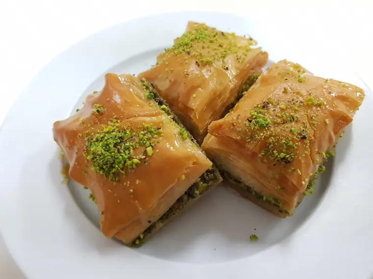
2018-04-28 Turkish baklava in Australian turkish cafe.jpgMaksym Kozlenko · CC BY-SA 4.0Source on Wikimedia Commons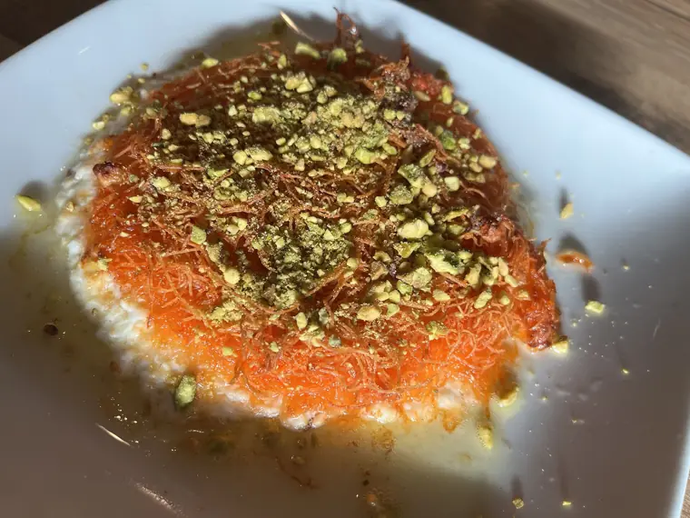
Knafeh khishnah with cheese of sheep milk.jpg白と赤茶 · CC BY-SA 4.0Source on Wikimedia Commons Turkish coffee in a traditional design cup.jpgGarrett Ziegler · CC BY-SA 4.0Source on Wikimedia Commons
Turkish coffee in a traditional design cup.jpgGarrett Ziegler · CC BY-SA 4.0Source on Wikimedia Commons Shawarma 3.jpgVis M · CC BY-SA 4.0Source on Wikimedia Commons
Shawarma 3.jpgVis M · CC BY-SA 4.0Source on Wikimedia Commons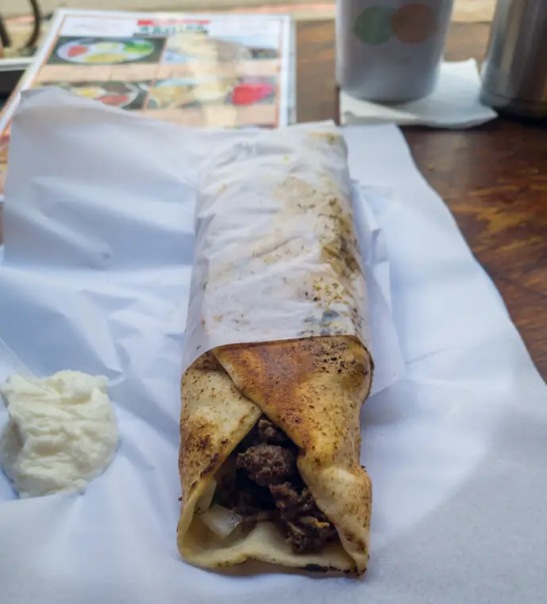
Shawarma at Restaurante Síria, São Paulo, Brazil.jpgTet · CC0Source on Wikimedia Commons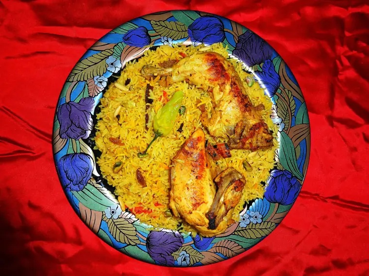
Chicken Mandi Rice مندي دجاج.JPGMiansari66 · CC0Source on Wikimedia Commons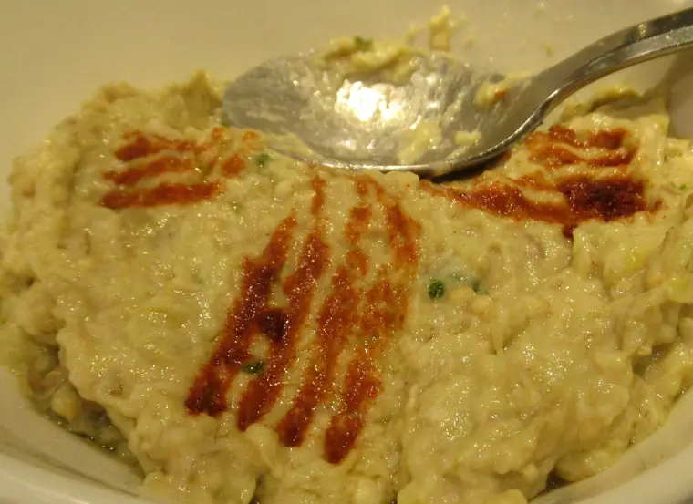
Baba ghanoush food.jpgCNEcija12345 · CC BY-SA 4.0Source on Wikimedia Commons Hookah Pipes at a Hookah lounge by Don Ramey Logan.jpgDon Ramey Logan · CC BY-SA 4.0Source on Wikimedia Commons
Hookah Pipes at a Hookah lounge by Don Ramey Logan.jpgDon Ramey Logan · CC BY-SA 4.0Source on Wikimedia Commons Hookah session at night with glowing coals and smoke in a relaxed gathering atmosphere.jpgShixart1985 · CC BY 2.0Source on Wikimedia Commons
Hookah session at night with glowing coals and smoke in a relaxed gathering atmosphere.jpgShixart1985 · CC BY 2.0Source on Wikimedia Commons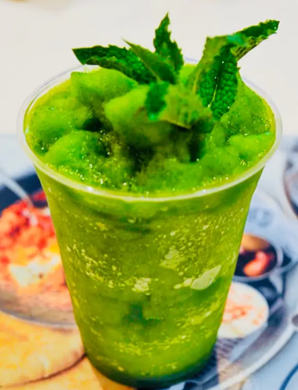
Limonana.pngYallayallaletsgo · CC BY-SA 4.0Source on Wikimedia Commons